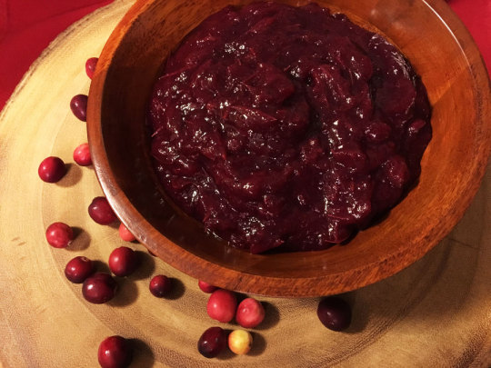

The famous Cranberry Chutney

A good juice
Don't get your cranberries out of a can this year! This delicious, tangy sauce is good
enough to be eaten on its own, but also makes a fantastic spread for turkey sandwiches.
Try spooning some on a slice of toast and then melting cheese over the top.
You will never buy canned jelly ever again.
Ingredients
2 quarts fresh cranberries
1 cup water
20 whole cloves
20 whole allspice
4 sticks cinnamon, broken
4 slices ginger root
Zest from one orange
¼ tsp freshly ground nutmeg
¾ to 1 ½ cups honey
- Wash the berries and get rid of any that have become squishy and discolored.
- Place the berries and water in a pot with a lid.
- Tie the spices and orange zest in a cheesecloth bag or a spice ball and add to the pot with the nutmeg.
- Cover and simmer until the fruit is soft, about 25 minutes; use the back of a wooden spoon to crush any that remain whole.
- Remove the spice bag and discard.
- If a smooth texture is preferred, pulse in a food processor for about ten seconds.
- Stir in the honey over low heat until incorporated.
- Cool in the refrigerator before serving.